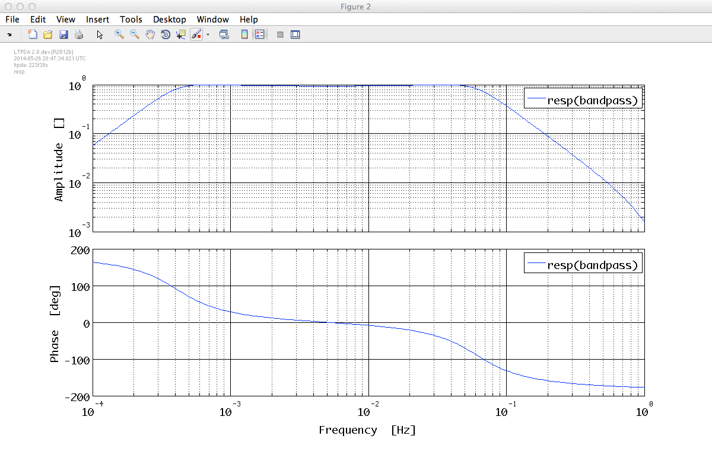
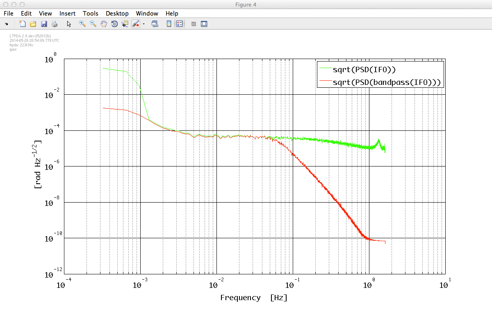

| LTPDA Toolbox™ | contents | |
In the LTPDA toolbox you have several ways to define digital filters. You can take a look at the digital filtering help pages. In this tutorial we will see how to create a bandpass filter and how to use it to filter data.
In this example we want to estimate the power spectrum of an interferometer time series in the LTP bandwidth, [1e-3, 30e-3] Hz. We need first to load it from the data package as follows:
d = ao('topic4/BandpassExample.xml');
We can now take a look at the data
d.iplot

Before estimating the power spectrum we would like to remove all the contributions outside our band and, in particular, the trend which will add up as a low frequency feature into our spectrum. We could apply the detrend method but we can also design a bandpass filter to do the job. The properties of this filter would be the following:
| Key | Value |
|---|---|
|
TYPE |
'bandpass' |
|
ORDER |
2 |
|
FS |
3.247 |
|
FC |
[5e-4 5e-2] |
We have set the cut-off frequencies slightly below and above the interesting bandwidth trying to avoid any kind of unwanted effect in the band. All the previous properties of the filter can be set as parameters in a plist that we can then insert in the constructor. We will use in our example the miir constructor to create a IIR filter.
pl = plist('type', 'bandpass', 'order', 2, 'fs', 3.247, 'fc', [5e-4 5e-2]);
bp = miir(pl);
bp is a filter object. Although we could set units, we don't need units here since the input and output are rad and therefore the filter will remain unitless. The response of the filter can be easily evaluated using the resp method, showing us the expected shape. We specify the frequecy range and the number of points we want with a plist.
bp.resp(plist('f1', 1e-4, 'f2', 1, 'nf', 200));

Once we have the filter object defined, to apply it to the data is straightforward. The standard method to do so is filter(AO, filter_obj), however we will use here the filtfilt method which processes the data in both the forward and reverse direction producing a zero-phase filter but also removing transients.
df = filtfilt(d, bp);
We can see how the filter has removed the trend by plotting both time series:
df.setPlotinfo();
iplot(d, df)
Please notice here that we had to reset the plotinfo properties that were propagated by the filtfilt method.

We are now ready to estimate the power spectrum using psd and the following parameters:
| Key | Value |
|---|---|
|
NFFT |
1e4 |
|
SCALE |
'PSD' |
This can be done by typing the following in the command window
pl = plist('Nfft', 1e4, 'scale', 'PSD');
p = psd(d, df, pl);
Since we entered two objects to psd, we get two objects at the output which can be easily plot using iplot
p.sqrt.iplot

| |
By discretizing transfer function models | IFO/Temperature Example - Simulation | |
©LTP Team